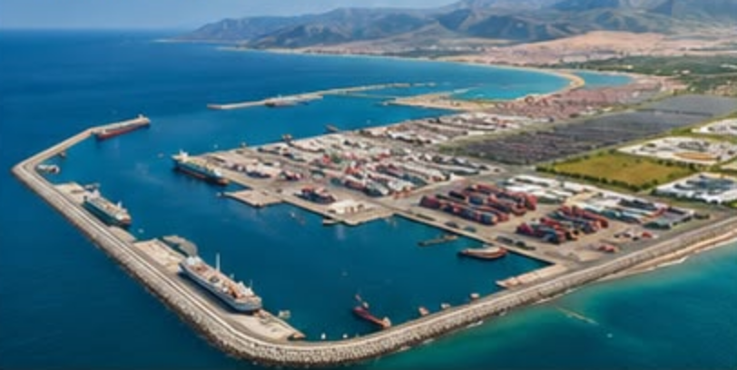
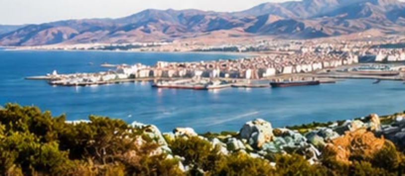
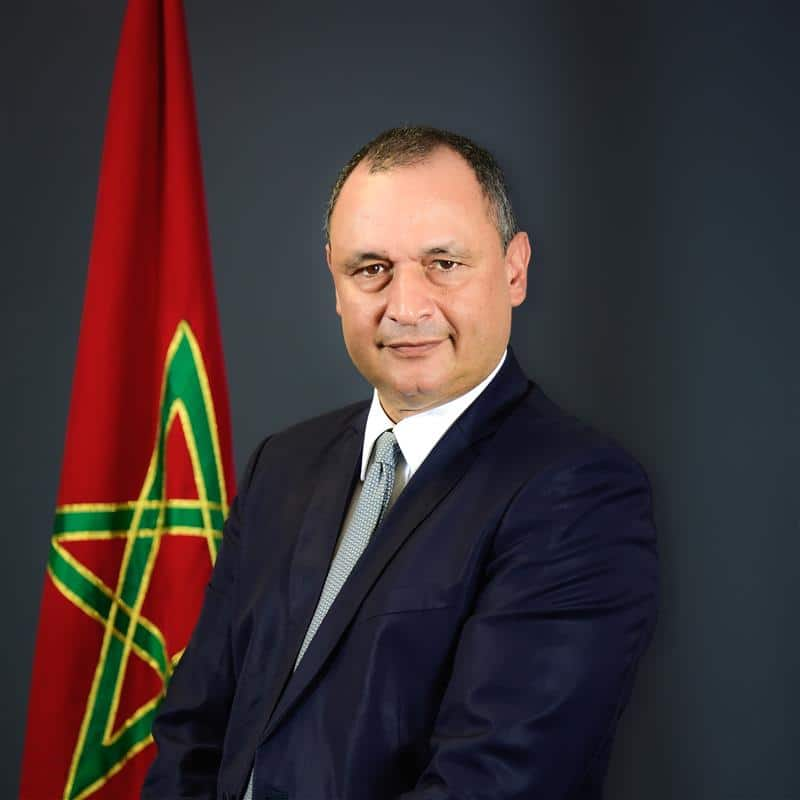
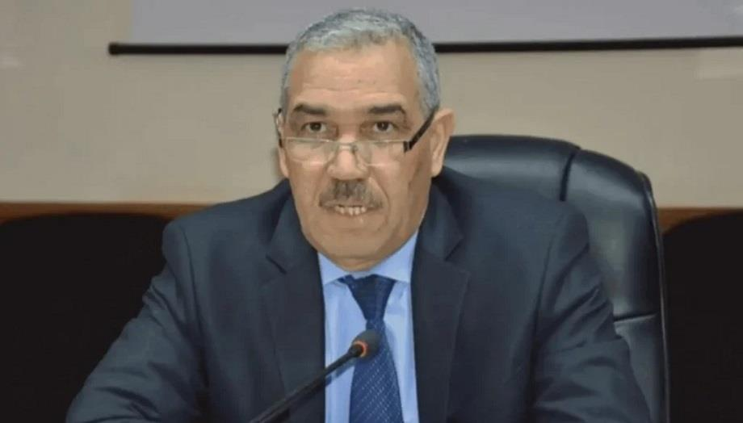
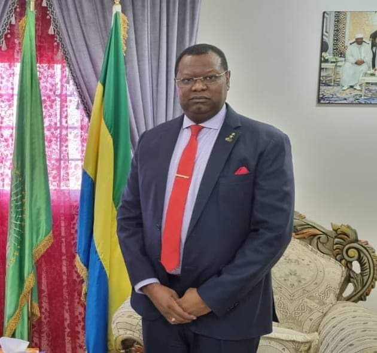
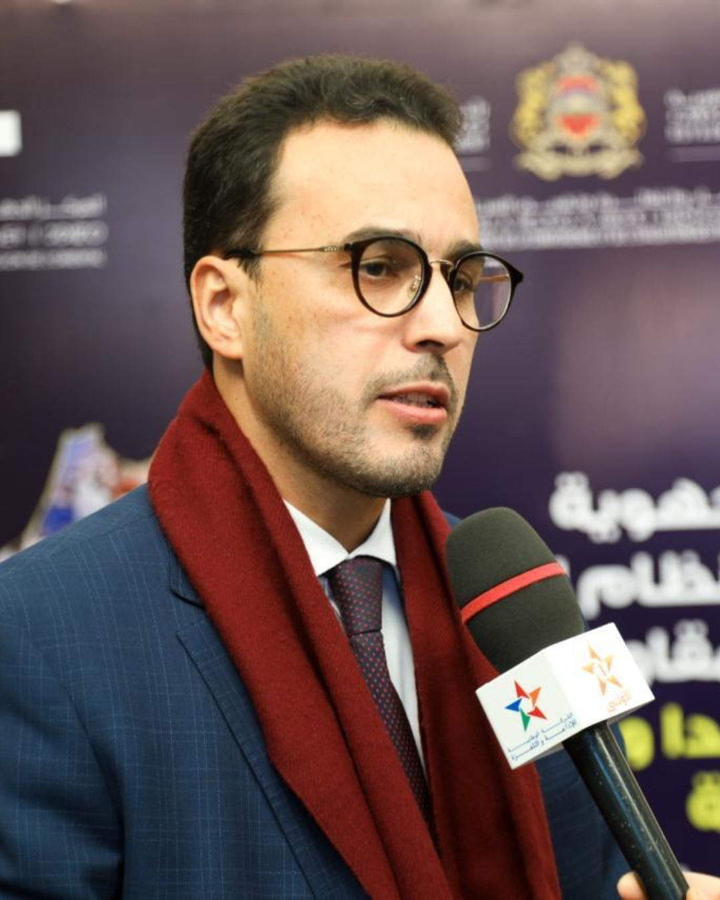
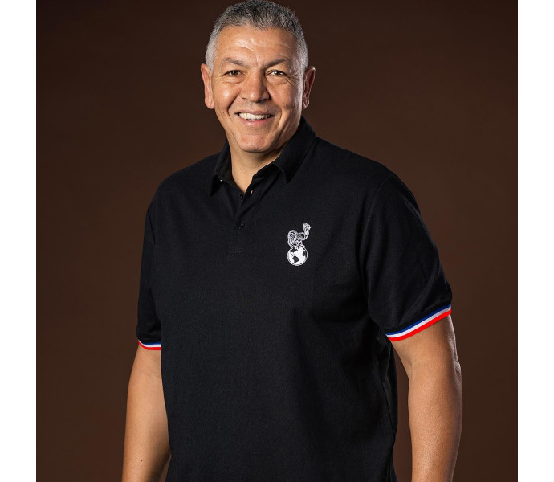

Le rendez-vous incontournable des leaders de demain
MEET THE LEAD est l'événement dédié à l'innovation, à la transformation digitale, à l'entrepreneuriat et au leadership. Après une 7ème édition réussie à Oujda, la 8ème édition pose ses valises à Nador, au cœur de la Région de l'Oriental.
Conférences inspirantes, panels d'experts, hackathon, job day et rencontres BtoB : venez partager vos idées, rencontrer des décideurs et booster votre parcours dans un cadre stimulant.
Le RDV de la communauté des leaders du futur8ème édition27 – 28 novembre 2026Nador · Région de l'OrientalHackathonJob DayAfrica Impact AwardsLe RDV de la communauté des leaders du futur8ème édition27 – 28 novembre 2026Nador · Région de l'OrientalHackathonJob DayAfrica Impact Awards
Nador · Région de l'Oriental
Nador, une nouvelle étape pour l'Oriental
Au cœur de l'Oriental et de la Méditerranée, Nador passe d'une logique de potentiel à une logique de connectivité, d'investissement et de création de valeur. Le cadre idéal pour accueillir les leaders du futur.
Une vision royale
Depuis 2003, une ambition structurante pour faire de l'Oriental un territoire ouvert, connecté et créateur de valeur.
Nador West Med
Un complexe portuaire et industriel majeur, ouvert sur les grandes routes maritimes internationales.
Une plateforme industrielle
Port en eau profonde, zone franche et plateforme industrielle pour attirer les investissements à forte valeur ajoutée.
Une porte vers les marchés
Au croisement des flux commerciaux entre l'Afrique, l'Europe et la Méditerranée.

Nador West Med

Baie de Nador
2 920stagiaires / an à la Cité des Métiers et des Compétences de l'Oriental
74filières de formation
8secteurs couverts
12 hacampus de la CMC
Position stratégique en Méditerranée occidentale
Les temps forts
Trois formats, un même cap : le leadership
Au-delà des conférences, Meet The Lead propose des expériences concrètes pour révéler les talents et les connecter aux opportunités.
8ème édition – Meet The Lead · 27 & 28 novembre 2026 · Nador
Hackathon Entrepreneuriat & Innovation
HackathonCompétition d'innovation et d'entrepreneuriat réunissant les talents émergents pour développer des solutions concrètes aux défis du territoire, accompagnés par des mentors experts. Le Hackathon se déroule sur trois jours, du 26 au 28 novembre 2026.
Job Day – Bridge To Job
EmploiForum de recrutement qui connecte les jeunes talents aux entreprises : entretiens, rencontres employeurs et opportunités locales et internationales.
Opening Ceremony – Africa Impact Awards
GalaCérémonie d'ouverture officielle et remise des trophées Africa Impact Awards, qui récompensent les initiatives africaines les plus impactantes.
Accueil et enregistrement
AccueilAccueil des participants, distribution des badges et du matériel de conférence.
Discours d'ouverture
PlénièreAllocutions de bienvenue de l'organisateur, des officiels et des partenaires.
Panel 1 – Santé & innovation sociale
PanelVers des territoires plus résilients et inclusifs.
Remise des prix du Hackathon
HackathonCérémonie de remise des prix aux équipes lauréates du Hackathon Meet The Lead.
Panel 2 – Éducation & leadership
PanelFormer la génération du changement et des territoires durables.
Déjeuner, rencontres BtoB & networking
NetworkingDéjeuner et rencontres BtoB entre ambassadeurs, entrepreneurs et la communauté africaine.
Panel 3 – Sport & développement
PanelLe pouvoir du jeu et du mouvement pour transformer des vies.
Panel 4 – Digital, connectivité & territoires
PanelUne régionalisation intelligente au service de l'humain.
Panel 5 – Thème annoncé prochainement
PanelLe thème et les intervenants de ce panel seront dévoilés dans les prochaines semaines.
Clôture et remerciements
ClôtureCérémonie de clôture officielle et remerciements aux participants, partenaires et organisateurs.
Programme provisoire, construit sur le format de la 7ème édition. Les horaires, thèmes et intervenants définitifs seront communiqués prochainement.
Ministres, diplomates, dirigeants et entrepreneurs : une sélection d'intervenants des éditions précédentes. Les speakers 2026 seront annoncés prochainement.

Speaker MTL
Ryad MEZZOUR
Ministre de l'Industrie et du Commerce

Speaker MTL
Mhamed ATFAOUI
Wali de la Région de l'Oriental

Speaker MTL
Brenly Martial OUPOLO
Ambassadeur du Gabon
Speaker MTL
Omar SEGHROUCHNI
Président de la CNDP
Speaker MTL
Anouar ALAOUI ISMAILI
Directeur Général – Maroc PME

Speaker MTL
Mohamed Amin FATMI
Président de la CGEM Oriental

Speaker MTL
Abdelatif BENAZZI
Ancien capitaine du XV de France, dirigeant sportif et ambassadeur international du sport